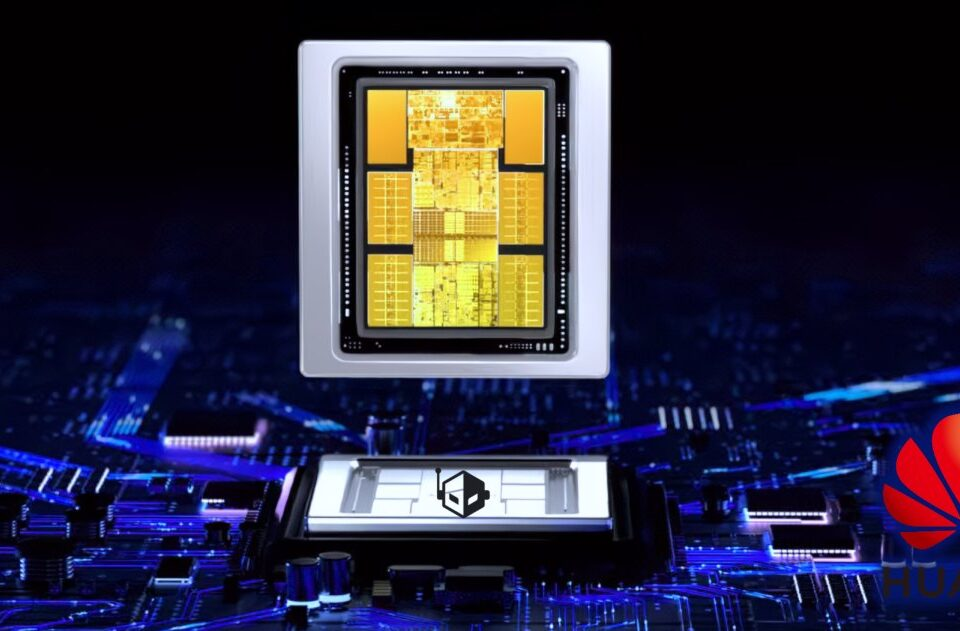

■ 说透 / SHUOTOU · 知览
SUBTITLE
DeepSeek V4原生适配昇腾910C，训练效率追平H100。但国产AI芯片的故事，从来不是一颗芯片的事。

DeepSeek V4的原生适配消息出来那天，我朋友圈里的芯片从业者分成了两拨，一拨在转那张性能对比图，说昇腾910C的训练效率终于追平了H100，国产算力站起来了，另一拨在评论区里打了一串省略号，没说话，但意思很明显：这事儿没你们想的那么简单，说实话，两边都有道理，但两边都只说了一半，我跟一个做AI infra的朋友聊了聊，他说了个挺有意思的角度："咱们现在庆祝的，是人家三年前就该做到的事"，这话有点刺耳，但也不是没道理。
DeepSeek V4确实在昇腾910C上跑出了和H100几乎一样的训练吞吐量，这个数字是实打实的，不是PPT，你想啊，一年前国产AI芯片还在跟英伟达的上一代产品比，现在直接对标H100，这个跨度放在半导体行业里，已经不能用"进步"来形容了，得用"追赶"——而且是那种咬着牙、不计成本的追赶，但有个问题你可能没注意：追平的是训练效率，不是生态成熟度，这两个词听起来差不多，实际上差了一个太平洋，训练效率说的是，你给模型喂数据，它学得多快，生态成熟度说的是，一个开发者从"我想写个AI程序"到"代码跑起来"，中间要踩多少坑，前者是跑分，后者是过日子。
DATA — 训练效率对比（DeepSeek V4）
~1.0x — 昇腾910C（华为，2025年量产）
~1.0x — H100（英伟达，2022年发布）
~0.6x — 昇腾910B（上一代，2024年）
就是说，华为用三年时间，把训练性能从H100的六成追到了十成，这个速度放在芯片史上是罕见的，但你注意，上面那张表只比了训练效率，没比推理效率，没比软件兼容性，更没比开发者生态，那问题来了，为啥大家只比训练效率，你想啊，训练效率最容易量化，你给两个平台跑同一个模型，看每秒处理多少token，数字一摆，高下立判，但推理效率呢，实际部署时，模型要服务成千上万的用户请求，这时候延迟、吞吐量、功耗，每个指标都影响成本，华为在这方面公开的数据很少，不是因为没有，而是因为差距还在。
更关键的是软件层。你想啊，一个AI工程师要训练模型，他用的不是裸芯片，是PyTorch、TensorFlow、CUDA、Triton这一整套工具链。英伟达花了十五年建起来的这套东西，不是华为发一颗新芯片就能一夜替代的。
CUDA生态：
15年积累 ── 400万+开发者 | 3000+AI框架/库
企业迁移成本 ── 重写代码 + 重新调试 + 重新培训团队
华为CANN生态：
5年建设 ── 百万级开发者 | 主要服务国内政企客户
迁移路径 ── 提供兼容层，但性能有损耗
说白了，单模型适配≠生态独立，DeepSeek V4能在昇腾上跑得好，是因为DeepSeek的团队花了大量人力去做针对性优化，但你想过没有，其他模型呢，Meta的Llama、谷歌的Gemini、Anthropic的Claude，这些模型会不会主动适配昇腾，我跟你说，大概率不会，至少短期内不会，这就形成了一个挺尴尬的悖论：国产芯片性能追上来了，但生态壁垒还在，你用国产芯片，得用国产优化的模型，你想用国际主流模型，还是得回到英伟达的生态里，说白了，墙从性能墙变成了生态墙，墙还在，只是换了一堵。
那华为在干什么？
他们当然知道这个问题，昇腾的CANN（Compute Architecture for Neural Networks）就是冲着替代CUDA去的，但生态建设不是发钱就能解决的，它需要开发者社区的自然生长，英伟达的CUDA生态之所以强，不是因为英伟达自己写了多少库，而是因为全球几百万开发者每天都在用，遇到问题自己搜Stack Overflow，找到答案，积累经验，这个飞轮转起来花了十五年，华为现在是在用政策驱动+大客户绑定的方式加速这个飞轮，但说实话，飞轮能不能转起来，不取决于投入多少，而取决于有没有足够多的自发使用者。
好，到这儿你可能觉得事情已经挺明白的了。但有个反向证据咱不能假装看不见。
美国出口管制越收越紧，H100在中国大陆基本买不到了。这不是假设，是已经发生了的事实。2024年英伟达为中国市场特供的H20，性能被砍了一大截，价格却没降多少。在这种情况下，国产芯片不是"要不要用"的问题，是"没得选"的问题。
DATA — 美国对华AI芯片出口管制时间线
2022年10月 — A100/H100首次被禁
2023年10月 — 管制扩大至A800/H800（特供版）
2024年12月 — H20也被列入限制清单
2025年 — 中国大陆市场英伟达高端GPU基本断供
就是说，国产AI芯片过了从0到1的河，但从1到10的船还没造完，从0到1是性能追平，是单点突破，是DeepSeek V4这样的标杆案例，从1到10是生态成熟，是开发者自然迁移，是国际市场认可，这两者之间隔着什么，隔着时间，隔着社区，隔着无数个深夜调试的工程师，华为可以砸钱做芯片，可以请DeepSeek做适配，但说实话，砸不出一个Stack Overflow上自发回答问题的开发者社区，那个东西只能长出来，不能造出来。
还有个事你注意，国产AI芯片的叙事里，有一个经常被忽略的成本，迁移成本，一个企业如果之前用英伟达，现在要切到昇腾，不只是换硬件那么简单，代码要重写，团队要重新培训，整个CI/CD流水线要改，甚至招聘标准都要变——以前招AI工程师看会不会CUDA，现在得看会不会CANN，这些隐性成本，没人在性能对比图里标出来，但它们是真实存在的，你想啊，一家创业公司，本来就没几个人，老板让你花三个月把模型从CUDA迁到CANN，这三个月不开发新功能、不服务客户，就干这个，老板算一笔账：昇腾硬件省下来的钱，够不够覆盖这三个月的人力成本，我跟你说，大多数情况下，答案是否定的，至少短期内是否定的，所以国产芯片现在的真实处境是：政策和大客户在推，但中小开发者在观望，政策推是因为国家安全，大客户跟是因为有补贴和定向采购，但一个生态能不能立住，最终要看中小开发者愿不愿意自发使用，没有这个基础，生态就是沙滩上的城堡。
一张船在河中央的照片：船身已经离开此岸，但彼岸还在雾里
那 DeepSeek V4 的适配到底意味着什么？
它意味着国产芯片的性能天花板已经被打破了。以前大家说国产芯片不行，主要是指性能差一截，现在这堵墙倒了。但墙后面还有一堵更高的墙，叫生态。这堵墙不会自己倒，需要有人一块砖一块砖地拆。
DeepSeek 拆了一块砖，但这堵墙还很高。
芯片是硬件，但AI的竞争是软件的竞争。
— 吉姆·凯勒（Jim Keller），芯片架构师
造船业在19世纪遇到过同样的问题：单体木船的尺寸到了极限，更大的船体会在风浪中折断。解决方案不是找更硬的木头，而是换成钢铁龙骨加分段拼装。
国产AI芯片正在经历自己的钢铁龙骨时刻。昇腾910C是龙骨，DeepSeek V4是第一段船体，但整艘船要造完，还需要很多很多段。河已经过了，但船还没造完。这话不是悲观，是诚实。
· · ·
ZAYEN知览
说透 · SHUOTOU · 知览